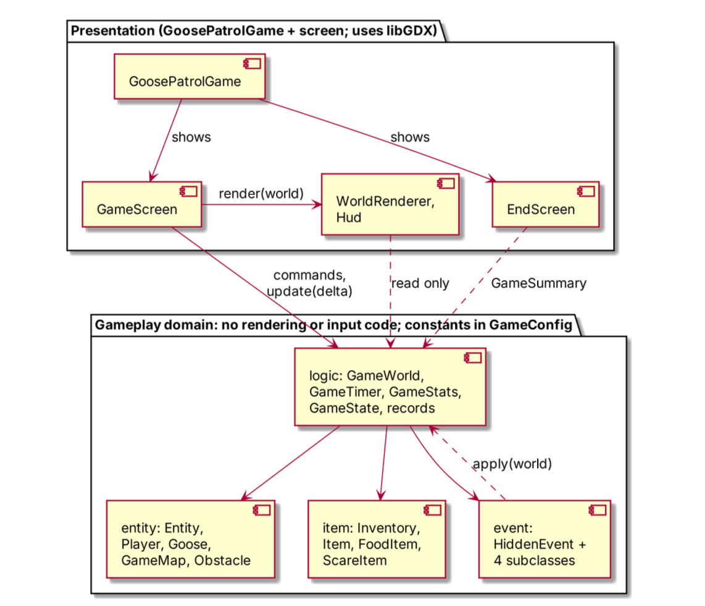
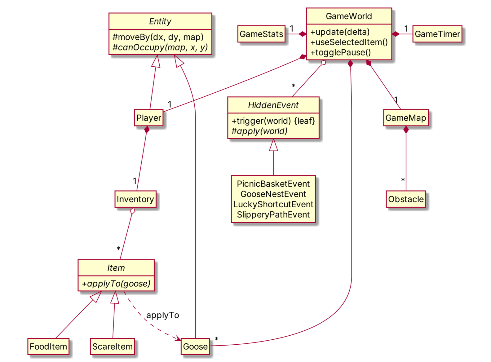
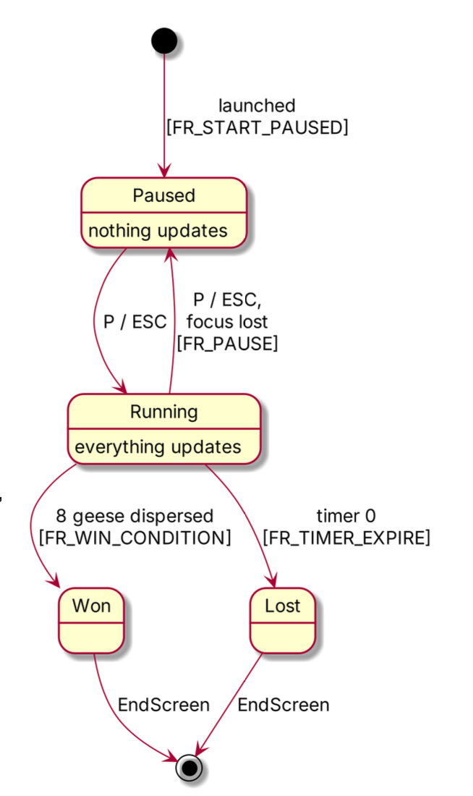
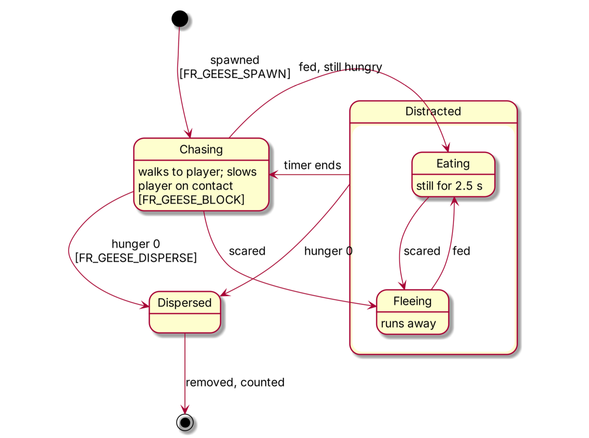
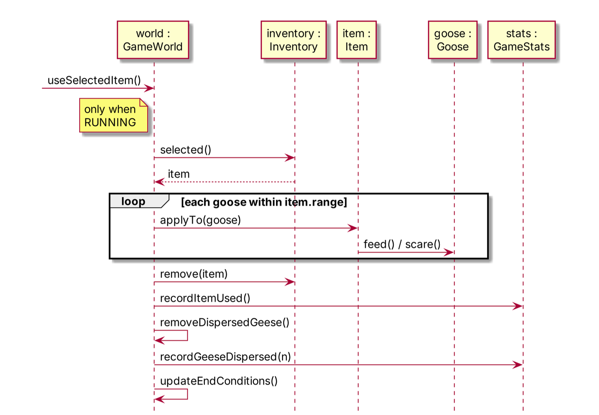

architecture/v1/, architecture/v2/), so changes show in pull request diffs and names can be checked against the Java source. draw.io and Lucidchart (manual layout, conflicting XML diffs) and StarUML or Modelio (proprietary files) were rejected.v2 design. The full-size v2 and v1 diagrams and our CRC cards are on the website's architecture page. Requirement IDs are from Req1.Goose Patrol uses a layered architecture [3] with dependencies pointing downwards only (Figure 1).

Desktop launcher (lwjgl3 module): Lwjgl3Launcher and StartupHelper configure the window and JVM and start GoosePatrolGame; the module holds no gameplay code (CR_JAVA, CR_EXECUTABLE).
Presentation (GoosePatrolGame, package screen): GoosePatrolGame owns the shared libGDX drawing resources and switches between GameScreen and EndScreen. GameScreen polls the keyboard every frame and turns key presses into commands on GameWorld (QR_INPUT_RESPONSE). WorldRenderer draws the top-down campus (CR_2D_TOPDOWN) and Hud draws the timer, counters, inventory and pause card (FR_TIMER, FR_ITEM_COUNTER, FR_EVENT_COUNTER, FR_INVENTORY_DISPLAY). Both only read the world.
Gameplay domain (packages logic, entity, item, event, plus GameConfig): holds every game rule, with no graphics or input code (only libGDX's Vector2 and Rectangle maths types). The whole game can therefore run without a window: 88 JUnit 5 tests run in CI on Linux, Windows and macOS (QR_STABILITY). All balance values sit in GameConfig (QR_BALANCE).
Alternatives considered. (1) Updating and drawing everything in a libGDX Screen.render(), as in our first 7-class prototype, is quick to write but ties game rules to OpenGL and cannot be unit-tested. (2) An Entity-Component-System (libGDX Ashley) suits games with many entity kinds; ours has a small fixed set (one player, up to 9 geese, static obstacles), so plain class hierarchies are easier for the Assessment 2 team to read and extend.
Figure 2 omits attributes, getters, records and presentation classes; the full diagram on the website shows them. Notation: italics mark abstract classes and operations; {leaf} on trigger is UML for an operation subclasses cannot override (Java final); and the box listing four event names stands for four separate HiddenEvent subclasses, merged only to save space.

logic: GameWorld is the single entry point to the game (a Facade [4]). It owns the Player, the geese, the hidden events, the GameMap, GameTimer and GameStats, and offers commands (togglePause, setPlayerDirection, selectItem, useSelectedItem) and queries. It hands the presentation layer read-only records: GameSummary for the end screen, so EndScreen keeps no reference to the live world, and WorldMessage for on-screen feedback.
entity: Entity.moveBy moves along each axis separately, so entities slide along walls, and asks the abstract canOccupy whether a position is allowed (Template Method [4]). Player checks GameMap.canPlayerOccupy (buildings and water block it); Goose checks canGooseOccupy (geese can swim across the lake). The map is passed in as a parameter, so entities hold no reference to it. GameMap.createCampus sets up the bounded 1280×720 campus with five named buildings, walkways and Campus Lake (FR_MAP_BOUNDS, FR_CAMPUS_THEME).
item: Item has a name, a range and an abstract applyTo(goose). GameWorld.useSelectedItem applies the selected item to every goose in range without knowing its type, so a new item is a new subclass (QR_EXTENSIBILITY). The player starts with 4 Bread (FoodItem) and 3 Whistles (ScareItem) (FR_INITIAL_INVENTORY).
event: HiddenEvent.trigger is final: it marks the event triggered and then calls the abstract apply (Template Method). "Fires at most once" (FR_EVENT_EFFECT) is therefore enforced in one place for all four events: PicnicBasketEvent and LuckyShortcutEvent (positive), GooseNestEvent and SlipperyPathEvent (negative) (FR_EVENT_COUNT). Events are not drawn until triggered (FR_EVENT_HIDDEN).
Game session (Figure 3). A new GameWorld starts in PAUSED with the controls shown (FR_START_PAUSED, QR_LEARNABILITY). ENTER, P or ESC toggles RUNNING, and GameScreen.pause() pauses the game when the window loses focus. GameWorld.update does nothing unless the state is RUNNING, so the timer, geese and player freeze in the same frame (FR_PAUSE, QR_PAUSE_RESPONSE). Dispersing 8 geese gives WON (FR_WIN_CONDITION). timer.isExpired() gives LOST (FR_TIMER_EXPIRE). Both pass a GameSummary to EndScreen (FR_END_SCREEN), where R starts a new game.
One Frame (sequence diagram on website). GameTimer.tick uses the full real-time frame time in double precision, so the 5-minute countdown does not drift (QR_TIMER_ACCURACY). Movement, hidden event checks and spawning run in steps of at most 0.05 s, so one slow frame cannot carry the player through a wall or past an event without triggering it (FR_MAP_BOUNDS, FR_EVENT_TRIGGER). A new goose arrives every 20 s, up to 9 at once (FR_GEESE_SPAWN).

Goose behaviour (Figure 4). A goose starts in CHASING with hunger 1 or 2 and walks towards the player; while any goose touches the player, GameWorld calls Player.setMobbed(true), which cuts the player's speed to 45% (FR_GEESE_BLOCK). Feeding lowers hunger: at 0 the goose is DISPERSED, removed and counted (FR_GEESE_DISPERSE); otherwise it stops to eat for 2.5 s. Scaring it (Whistle or LuckyShortcutEvent) makes it flee. UML's composite state Distracted {Eating, Fleeing} is coded as GooseState.DISTRACTED plus a fleeing flag and one distractionSecondsLeft timer, because both sub-states end the same way.

Using an item (Figure 5). When SPACE is pressed, GameScreen calls useSelectedItem(), which acts only while RUNNING. The item is applied to every goose within its range (FR_USE_ITEM), then removed from the Inventory and counted, even when no goose was in range (FR_ITEM_COUNTER). Dispersed geese are then removed and counted, and the win condition is checked straight away.

Evidence on the website: CRC cards and process, initial v1 diagrams and the full v1 → v2 change log.
Req1, keeping game rules apart from drawing so they could be tested.91a6bc0), fixing the packages logic, entity, item and event.88ede63) and the layered version were compared on testability, requirement coverage and cohesion on a review branch (review/side-by-side). We kept the layered design and moved the prototype's Lucky Shortcut and Slippery Path ideas into new HiddenEvent subclasses.Req1 on the traceability page.| Area | v1 (initial) | v2 (as built) and reason |
|---|---|---|
| Presentation | One GameScreen drew everything |
GoosePatrolGame switches screens; drawing split into WorldRenderer and read-only Hud (one job per class) |
| Movement and collision | Point entities; rectangular map only | Entity radius, shared moveBy with canOccupy, Obstacle types BUILDING and WATER, so geese can cross the lake but the player cannot |
| Goose behaviour | One Distracted state; dispersal and win left for A2 |
Distracted split into Eating and Fleeing; dispersal and win brought into A1 so a game can be won |
| Hidden events | Placeholder subclasses each tracked their own flag | Final trigger() calls apply(). Adding two events from the prototype needed no change to existing event or item classes, only registration in GameWorld.createDefault (QR_EXTENSIBILITY) |
| End screen and timing | EndScreen read the live world; one update step per frame |
GameSummary record; double-precision timer; 0.05 s simulation steps; constants in GameConfig |
Names match across Req1, the diagrams, the Java classes and the tests. The method- and test-level matrix is on the traceability page. "Web" is the full-sized diagram on the website.
| Req1 IDs | Fig. | Architectural constructs |
|---|---|---|
FR_PLAYER_MOVE, FR_MAP_BOUNDS, FR_CAMPUS_THEME |
1, 2 | GameScreen → GameWorld.setPlayerDirection → Player.move, Entity.moveBy; GameMap.createCampus, Obstacle |
FR_GEESE_SPAWN, FR_GEESE_BLOCK, FR_GEESE_DISPERSE |
2, 4 | GameWorld.spawnGooseAt, spawning in update; Goose.chase, feed, scare, isMobbing; GooseState; Player.setMobbed |
FR_INITIAL_INVENTORY, FR_USE_ITEM, FR_INVENTORY_DISPLAY |
2, 5 | Inventory, Item, FoodItem.bread, ScareItem.whistle, GameWorld.useSelectedItem; inventory bar in Hud |
FR_EVENT_HIDDEN, FR_EVENT_COUNT, FR_EVENT_TRIGGER, FR_EVENT_EFFECT |
2, Web | HiddenEvent (isTriggeredBy, trigger, apply) and 4 subclasses; WorldRenderer draws only triggered events |
FR_TIMER, FR_TIMER_EXPIRE, FR_START_PAUSED, FR_PAUSE |
3, Web | GameTimer, GameState, GameWorld.togglePause / pause, GameScreen.pause; timer and pause card in Hud |
FR_ITEM_COUNTER, FR_EVENT_COUNTER, FR_WIN_CONDITION, FR_END_SCREEN |
3, 5 | GameStats, GameSummary, GoosePatrolGame.showEndScreen, EndScreen; counters in Hud |
QR_TIMER_ACCURACY, QR_PAUSE_RESPONSE, QR_INPUT_RESPONSE, QR_FRAME_RATE |
1, 3, Web | Double-precision GameTimer; 0.05 s steps; per-frame input polling in GameScreen; FPS counter (F3) in Hud |
QR_STABILITY, QR_EXTENSIBILITY, QR_LEARNABILITY, QR_MAP_CLARITY, QR_BALANCE |
1, 2 | Headless domain tests; Item and HiddenEvent hierarchies; controls card in Hud; labelled obstacles; GameConfig |
CR_JAVA, CR_EXECUTABLE, CR_SINGLE_PLAYER, CR_2D_TOPDOWN, CR_LICENCES |
1 | Lwjgl3Launcher, Java 17 runnable JAR; one Player; top-down WorldRenderer; permissive libraries with notices in the JAR |
Ready for Assessment 2. More items (FR_INITIAL_INVENTORY ≥ 5, FR_PICKUP_*) are new Item subclasses, with map pickups calling Inventory.add. More events (FR_EVENT_COUNT ≥ 5) are new HiddenEvent subclasses registered in GameWorld.createDefault. Goose sizes (FR_GEESE_VARIETY) can parameterise Goose while keeping moveBy and GooseState. Scoring (FR_SCORE_*, QR_SCORE_TRANSPARENCY) extends GameStats and GameSummary, which the end screen already displays.